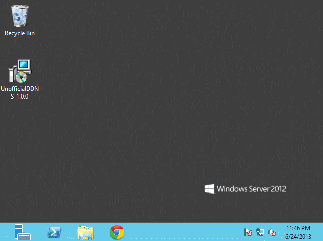

UnofficialDDNS is a Windows service which provides Dynamic DNS for regular registrars. Instead of signing up with a dynamic DNS provider and creating a CNAME record at your registrar to point to your dynamic DNS (for example: homeserver.mydomain.com -> alfred1986.dynamicdnsprovider.info), UnofficialDDNS cuts out the middle man and creates A records directly.
When installed, UnofficialDDNS removes all existing A and CNAME records from the domain you specify (for example, homeserver.mydomain.com or mydomain.com if you'd like) and adds a new A record which is the IP address of the computer running UnofficialDDNS. By default the service checks if your IP address has changed every hour, and if it fails (no internet, etc) it retries in 15 minutes.
Additional information is on the project's wiki. The Linux/Unix version is UnofficialDDNSnix.
Supported Registrars
Currently Name.com is the only supported registrar. Go to https://www.name.com/reseller to apply for an API token. UnofficialDDNS needs the following:
- Name.com user name.
- API token.
- The (sub)domain which will point to your server.
It might take a couple of days to get a reply from their customer support with your token.
Supported Platforms
Both 32 and 64-bit versions of the following operating systems are supported. The .NET Framework 4.5 is required as well.
| Desktop OS | Server Equivalent |
|---|---|
| Windows Vista | Windows Server 2008 |
| Windows 7 | Windows Server 2008 R2 |
| Windows 8 | Windows Server 2012 |
Animations
Below are a couple of animations of a typical installation on Windows Server 2012. I'm also showing how you can change any settings without uninstalling and reinstalling. I made these with GifCam.
| Installing | Changing Settings |
|---|---|
|  |
{kind=link}
{kind=link}
Comments
comments powered by Disqus